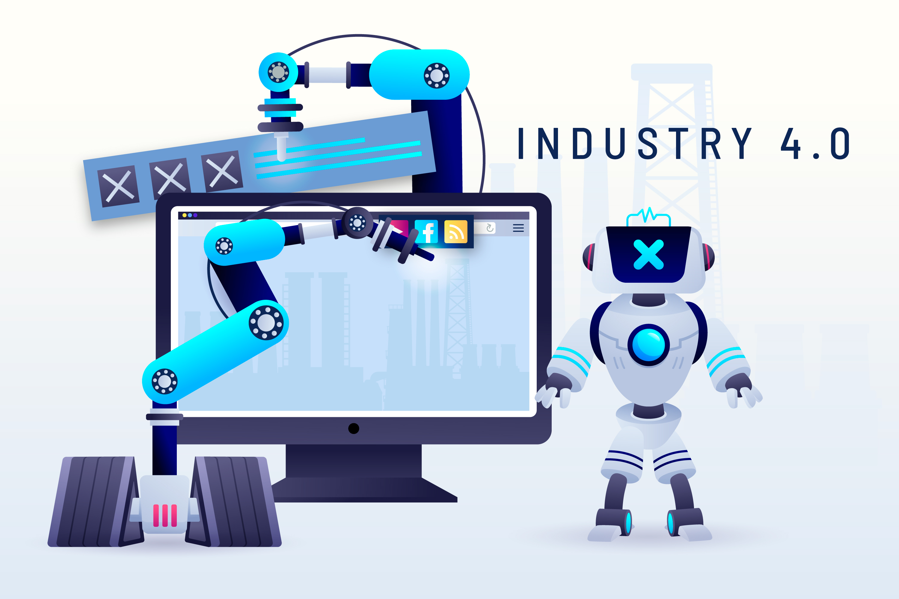

Revolusi AI di Indonesia
Ditulis oleh Muhammad Farhan Wirdiansyah, Mahasiswa Teknik Informatika,Universitas Pelita Bangsa

Dalam beberapa tahun terakhir, Artificial intelligence (AI) menjadi topik hangat dunia, karena membawa dampak signifikan di berbagai sektor. Di Indonesia sendiri, AI menjadi pusat perhatian, baik itu pemerintah, manufaktur, maupun bidak akademik. Seiring dengan perkembangan teknologi yang begitu pesat, AI hadir menawarkan potensi besar untuk meningkatkan efesiensi, produktivitas, dan inovasi di berbagai bidang. Potensi AI di berbagai sektor:
1. Industri Manufaktur 
Salah satu sektor yang paling merasakan dampak positif dari AI adalah bidang industri manufaktur dalam meningkatkan efisiensi dan produktivitas. Misalnya penggunaan conveyor dibekali sensor yang dapat di kendalikan dari komputer dapat membantu pengawasan terhadap proses manufaktur apabila terjadi kesalahan. Dengan teknologi yang dikombinasikan dengan AI, tentunya membuat semuanya menjadi efisien sehingga ini menjadi hal yang menguntungkan dalam bidang Industri manufaktur.
2. Akademis

Di sektor akademis, AI banyak mengambil peranan guru maupun murid. Karena dengan teknologi AI tentunya dapat menciptakan pengalaman mengajar dan belajar menjadi lebih fleksibel. Misalnya platform aplikasi pembelajaran berbasis AI, guru dapat memberikan materi pembelajaran secara virtual dan siswa juga dapat mengakses materi, dengan seperti itu siswa dapat mengulang pembelajaran secara mandiri sampai benar-benar paham.
3. Instansi Pemerintah
Dalam bidang pemerintahan, AI berperan penting dalam meningkatkan kualitas layanan publik administrasi. Misalnya Dengan memanfaatkan aplikasi pemerintahan dibekali sistem AI dapat memberikan data masyarakat yang akurat, sehingga instansi pemerintahan memberikan layanan yang efisien. Selain itu, AI juga dapat di realisasikan untuk keamanan data negara dan data masyarakat.
Revolusi AI membawa banyak peluang diberbagai bidang di Indonesia. Dengan memanfaatkan potensi AI di berbagai sektor seperti, industri manufaktur, akademis, dan pemerintahan, Indonesia dapat meningkatkan efisensi dan produktivitas kualitas hidup masyarakatnya. Namun, untuk mencapai hal tersebut, diperlukan upaya bersama dalam mewujudkannya seperti, infastruktur, dan tenaga ahli. Dengan demikian, AI dapat menjadi teknologi yang membawa perubahan positif untuk Indonesia menuju masa depan yang gemilang
Tentang Saya

Hi, saya Muhammad Farhan Wirdiansyah, saat ini saya bekerja di PT. Toyota Motor Manufakturing Indonesia, Sebagai Operator Produksi Welding. saya juga saat ini sedang melanjutkan pendidikan di Universita Pelita Bangsa, Jurusan Teknik Informatika. Saat ini saya tertarik dengan pekerjaan Frondend Developer dan juga Data Analyst.